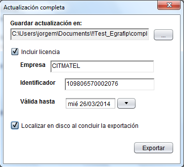
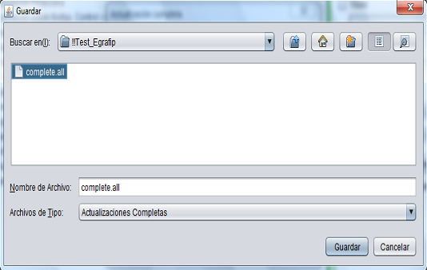

Ventana "Actualización Completa"
En esta ventana es donde se exporta el fichero de actualización completa que será utilizado por la aplicación cliente para introducir los datos al sistema. Primeramente es necesario declarar la dirección donde será almacenado dicho fichero, lo cual puede realizarse mediante de la ventana que se muestra al hacer clic en el botón de búsqueda.
La aplicación cuenta además con la opción de incluir una licencia al fichero de exportación que será generado. Si se desea incluir una licencia se debe especificar en el campo Identificador, una clave que identifica a la instalación que será activada con esta nueva licencia y que el cliente que necesita la actualización debe proveer. Una vez ingresado los datos correspondientes, se puede generar el fichero de actualización, dando clic en el botón Exportar.

Ventana "Guardar"
Esta es la ventana que permite seleccionar la ubicación donde será guardado el fichero de actualización completa.
